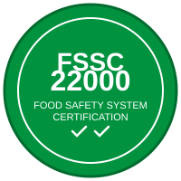

ISO-ի վրա հիմնված սննդի անվտանգության համակարգի սերտիֆիկացում
FSSC 22000 (Սննդի անվտանգության համակարգի սերտիֆիկացում) ISO-ի վրա հիմնված սննդի անվտանգության կառավարման համակարգի հզոր սերտիֆիկացման սխեմա է։ Այն ապահովում է շրջանակ սննդի անվտանգության պարտականությունները արդյունավետ կառավարելու համար և լիովին ճանաչված է Համաշխարհային Սննդի Անվտանգության Նախաձեռնության (GFSI) կողմից։
Կառուցված ISO 22000-ի հիմքի վրա, FSSC 22000-ը ինտեգրում է ISO 9001 որակի կառավարման մոտեցումը HACCP սկզբունքների և սեկտորի հատուկ նախապայմանական ծրագրերի հետ։ Այս համապարփակ ստանդարտը օգտագործվում է ավելի քան 20,000 սերտիֆիկացված կազմակերպությունների կողմից սննդի մատակարարման ամբողջ շղթայում՝ գյուղատնտեսությունից մինչև մանրածախ վաճառք։
Մեր FSSC 22000 սերտիֆիկացումը ցույց է տալիս Շահիրյանի համակարգված մոտեցումը սննդի անվտանգության կառավարմանը մեր գործառնությունների ամբողջ ընթացքում։ Այս սերտիֆիկացումը հաստատում է՝
FSSC 22000-ը միավորում է միջազգայնորեն ճանաչված մի քանի ստանդարտներ մեկ համապարփակ սերտիֆիկացման մեջ՝
Այս բազմաշերտ մոտեցումը ապահովում է, որ մեր ձավարի ցորենի արտադրության յուրաքանչյուր ասպեկտ համապատասխանում է խիստ միջազգային ստանդարտներին։
FSSC 22000 սերտիֆիկացումը ձեռք բերելը և պահպանելը պահանջում է սննդի անվտանգության համապարփակ կառավարում՝
FSSC 22000-ի համաշխարհային ընդունումը նշանակում է, որ Շահիրյանի ձավարի ցորենը ճանաչված և վստահելի է խոշոր մանրածախ վաճառողների, սննդի արտադրողների և սննդի սպասարկման ընկերությունների կողմից ամբողջ աշխարհում։ Այս սերտիֆիկացումը բացում է միջազգային շուկաների դռները՝ միաժամանակ ապահովելով, որ մեր ավանդական արտադրության մեթոդները համապատասխանում են ժամանակակից անվտանգության ստանդարտներին։
Ավելի քան 65 տարի Շահիրյան ընտանիքը առաջնահերթություն է տվել անվտանգությանը և որակին մեր արտադրած ձավարի ցորենի յուրաքանչյուր հատիկում։ Մեր FSSC 22000 սերտիֆիկացումը ֆորմալացնում է այս պարտավորվածությունը աշխարհակարգի կառավարման համակարգով, որն ապահովում է հետևողական գերազանցություն մեր օբյեկտից մինչև ձեր սեղանը։